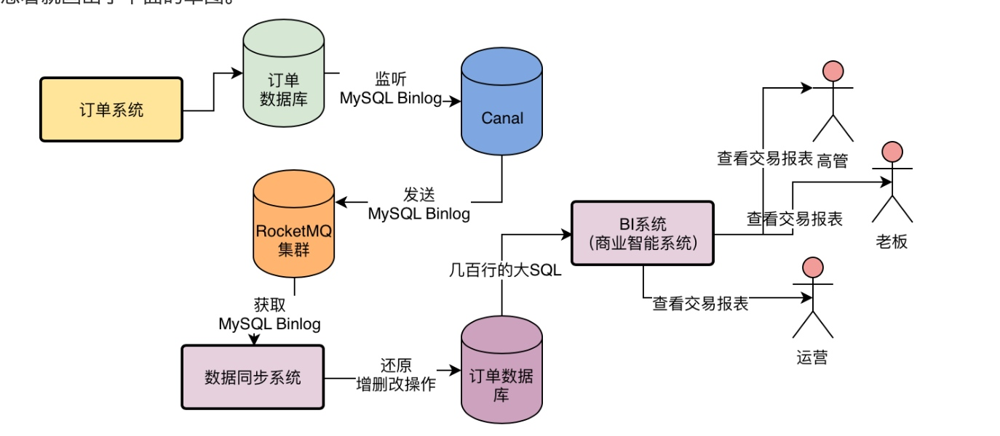

迁移方案
迁移方案
- prouducer双写
- Consumer 系统都需要同时从 Kafka 和 RocketMQ 里获取消息，分别都用一模一样的逻辑处理一遍。
- 统计每个MQ读取和处理的消息的数量，把RocketMQ读取到消息的结果写入临时存储中
- 经过一段时间观察和对比消息量和处理结果都一致了
- producer开始按比例开始切换
- consumer开始消费rocketmq + kafka
- producer切换完毕，consumer切换到只从rocketmq消费

生命的意义是成为你自己！


后台有定时任务，定时任务会去扫描 RMQ_SYS_ TRANS_HALF_ TOPIC 中的 Half 消息，如果你超过一定时间还是 half 消息，他会回调订单系统的接口，让你判断这个 half 消息是要 rollback 还是 commit


